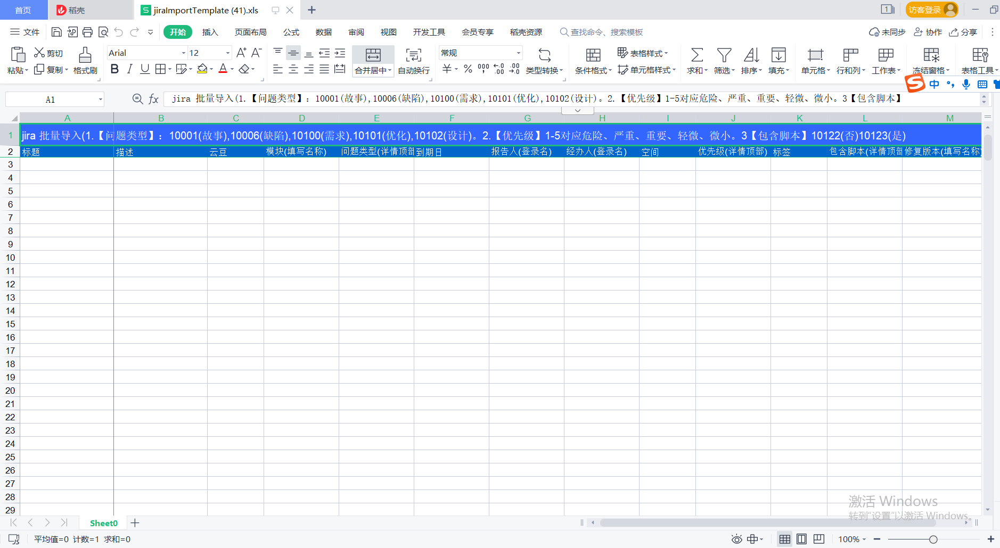

2. 结果转excel
一般是将sql模块的结果转出excel,也可以其他复杂的模块，比如http
需要配合file_response,将生成的文件转下载文件对象
为empty 模块，可以作为空白模板下载
模块: result2excel
配置示例
index.yaml# 结果转excel 实现类 - key: result2excel path: collect.service_imp.result_handlers.handlers.result2excel class_name: Result2Excel method: handler
jira 空白模板下载
excel 表示 excel 的配置
excel 下面0 表示第一个标签,1 表示第二个标签。后面依次类推
title_row 表示标题行，一般是 0，第一行
title_style 第一行的样式
name_row 列的名称，一般是 1，第二行
start_row 数据填充行，一般是2，第三行
frozen_col 冻结列，一般是1 ，冻结第一列，同时默认冻结name_row 行
data 数据来演，默认是result
fields 列字段信息，name 表示名称，width 表示宽度。和excel 上传保持一致
- result2excel 是result_handler 的结果处理器
excel_path 文件保持的位置
jira 模板下载- key: downloadTemplate name: 下载模板 module: empty http: true params: excel_path: default: "./template/jiraImportTemplate.xls" excel: 0: title_row: 0 title_style: 'alignment:vert center;font:color white ,height 240;pattern: pattern solid, fore_colour light_blue;' name_row: 1 name_style: 'font:color white ;pattern: pattern solid, fore_colour ocean_blue' start_row: 2 frozen_col: 1 title: jira 批量导入(1.【问题类型】：10001(故事),10006(缺陷),10100(需求),10101(优化),10102(设计)。2.【优先级】1-5对应危险、严重、重要、轻微、微小。3【包含脚本】10122(否)10123(是) data: result fields: - name: 标题 width: 100 - name: 描述 width: 100 - name: 云豆 width: 60 - name: 模块(填写名称) width: 80 - name: 问题类型(详情顶部) width: 80 - name: 到期日 width: 80 - name: 报告人(登录名) width: 80 - name: 经办人(登录名) width: 80 - name: 空间 width: 60 - name: 优先级(详情顶部) width: 80 - name: 标签 width: 60 - name: 包含脚本(详情顶部) width: 80 - name: 修复版本(填写名称) width: 100 result_handler: - key: result2excel params: excel_path: excel_path - key: file_response params: path: excel_path filename: "jiraImportTemplate.xls"
注解
file_response 文件转下载对象处理器

{kind=link}